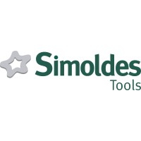

Segurança & Infra · Simoldes ToolsSecurity & Infra · Simoldes Tools
Implementação e hardening de um SIEM Wazuh em produção com 19 agentes ativos, integração CrowdStrike Falcon EDR via pipeline Python, FortiGate e Office 365, e 39 mapas Zabbix cobrindo 8 unidades industriais. Alinhamento com CIS v8 e NIST SP 800-53.Deployment and hardening of a production Wazuh SIEM with 19 active agents, CrowdStrike Falcon EDR integration via Python pipeline, FortiGate and Office 365, and 39 Zabbix maps covering 8 industrial units. Aligned with CIS v8 and NIST SP 800-53.
WazuhCrowdStrikeFortiGateZabbixNISTCIS v8
Ver case studyView case study →